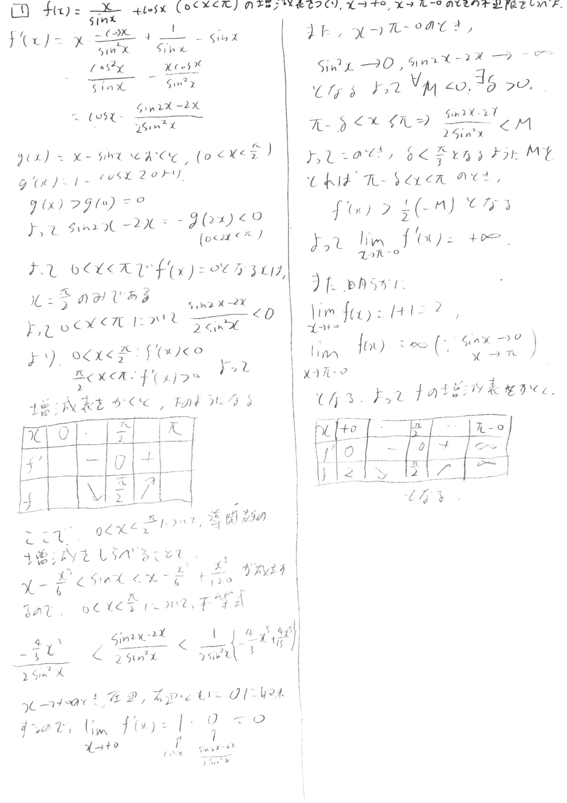
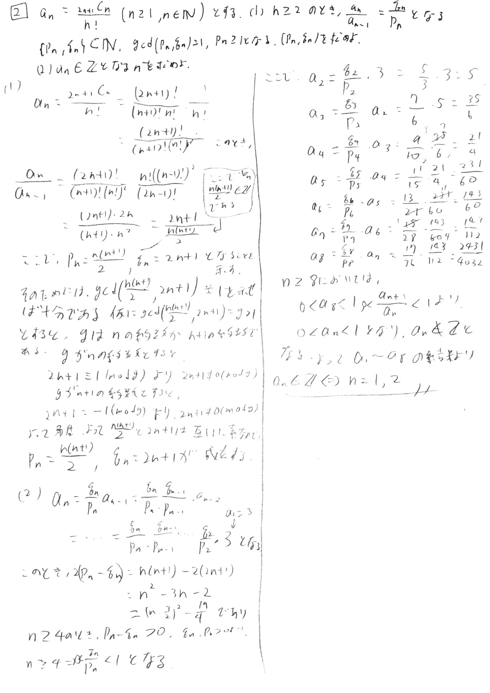
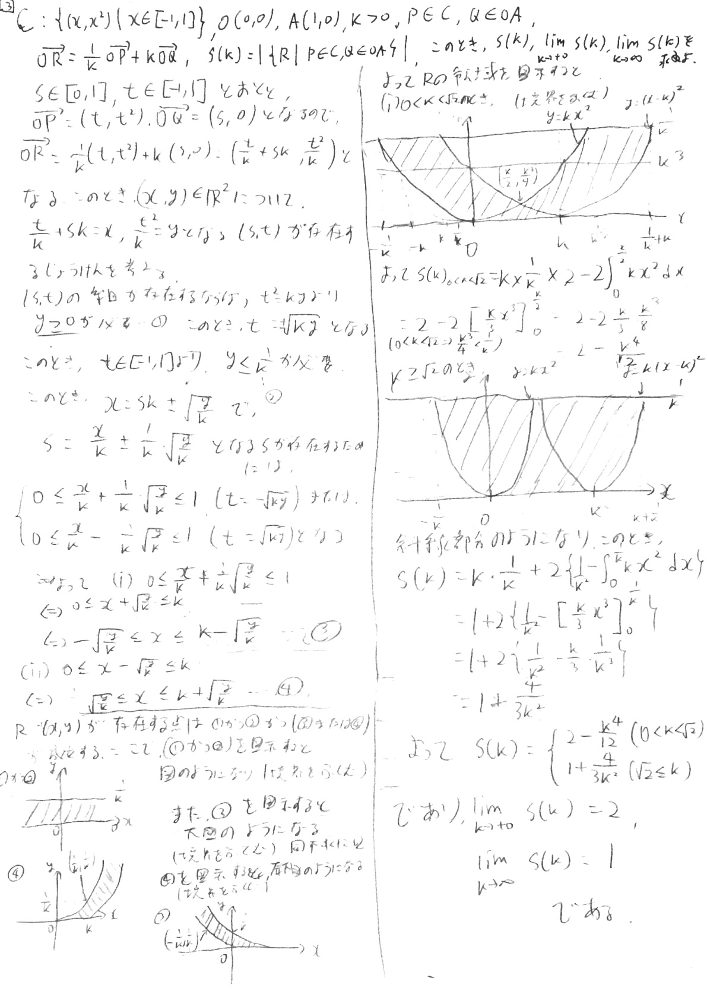
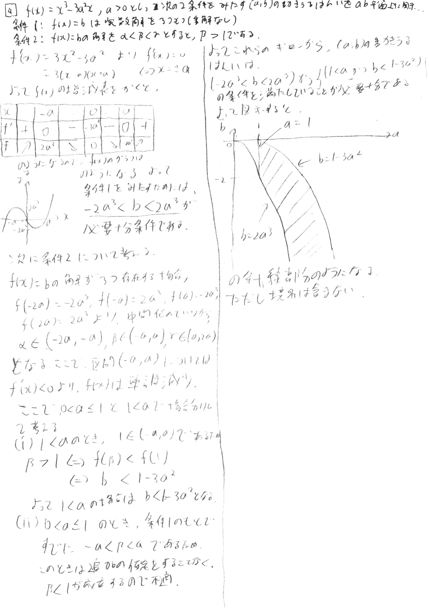
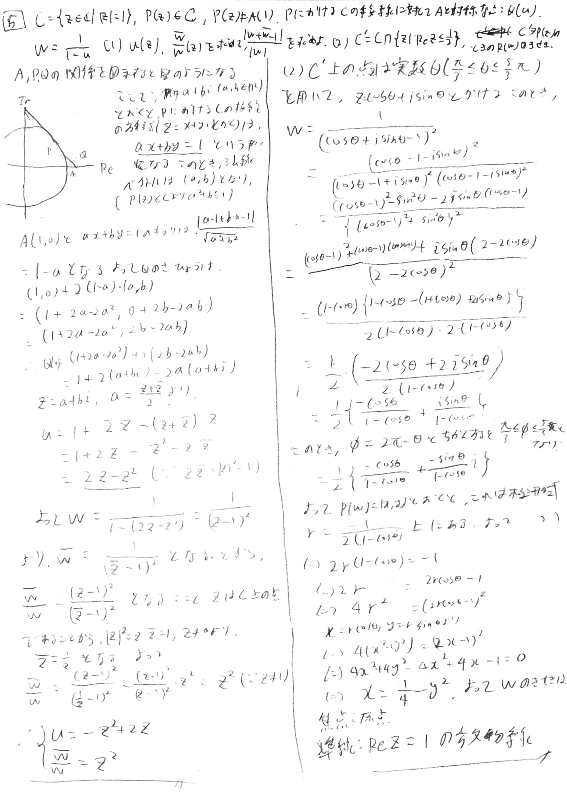
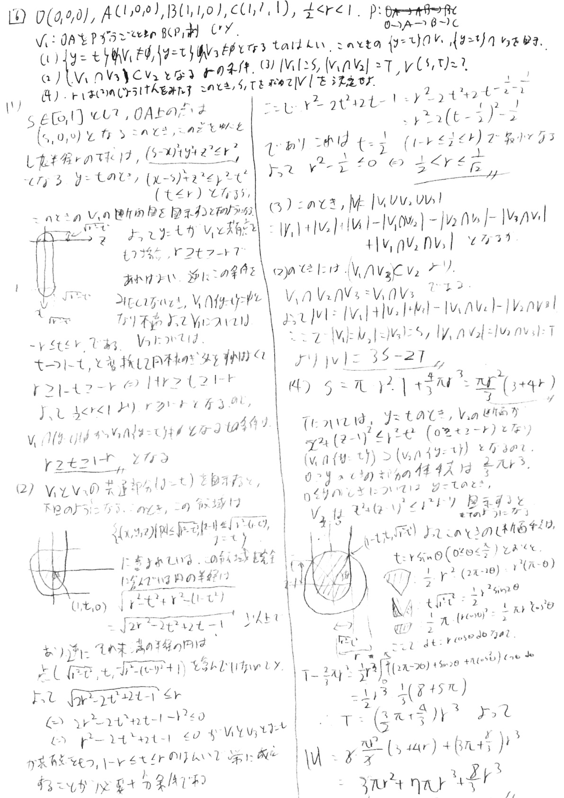

東京大学の解答
pdf版
訂正
問1

- 発散の判定にこれ見よがしにε-δ論法みたいなことを使用していますが気にしないでください。
問2

- 答え自身は間違っていないとは思うのですが、条件を絞った後最終的に総当りで答えを導出したのであまり賢い回答に思えません。
問3

この問題はdesmosでシュミレーションしてみました。オレンジ色の領域は(s,t)の動きうる範囲であり、それに対応して点Rの存在領域(緑色)が決まります。
グラフのリンクは
こちら。
余談ですがこの問題は重積分+ヤコビアンで解くと常にS(k)=2と出てしまい解くことができません。それは領域の重複部分を考慮できていないからと思われます。
問4

- 最後に領域を図示しているものが間違っています。(a,b)の条件はb>-2a3,b<1-3a2,a>1となっていますが、その場合境界となる2曲線は交わっていて、更に言うならば接しています。(a=1でのそれぞれの微分係数は-6になる。)
- この問題もdesmosでシミュレーションしています。リンクはこちら。
問5

- |w+w-1|/|w|を求めていないのでここで求めます。
|w+w-1|/|w|=|1+w/w-1/w|
=|1+z2-(z-1)2|=|2z|=2|z|=2
問6

- (4)において、|V|を計算する際に3S-2Tとすべきところを3S+2Tとして間違って計算しています。
2018年のページに戻る
解答速報のページに戻る
トップページに戻る